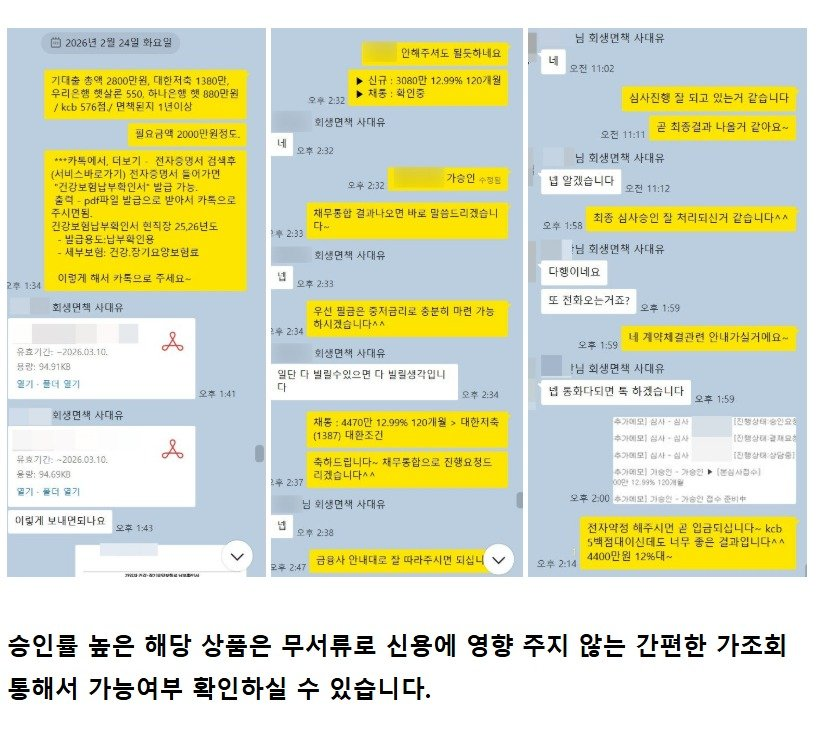
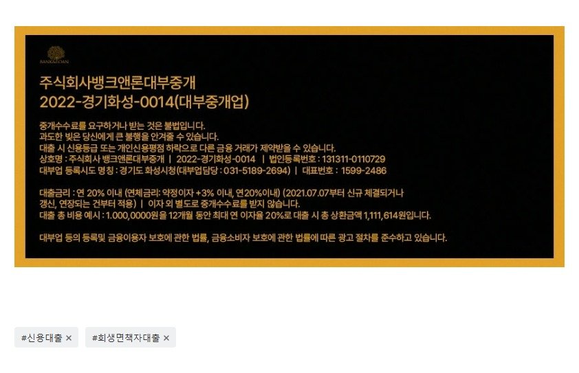

[신용대출(회생면책자포함)공지] 4대가입 직장인 일반 신용자 및 회생 면책자 승인률 대폭 상승 상품 공지. **승인률 정말 대박, kcb 576점인 고객님 4400만원 12%대승인**
**J사 상품 승인률 대폭 상승하여 공지**
어제 회생면책 1년전후의 4대가입 직장인분들 세분이 문의가 오셔서
면책자 전용상품이나 일반상품들 다 가조회 해드렸는데 다른 금융사
들은 모두 부결. 하지만 j사는 금리도 매우 저렴하고 또 높은 한도로
가승인을 내주었습니다. 참고로 해당 고객님들 신용평점이 kcb 6백점
초반과 심지어 576점인분도 있으셨습니다. kcb 576점인분은 조금전
심사 승인 다 되어서 곧 4400만원 12%대의 금리로 입금예정입니다.
어제 공지 드리고 싶었으나 이 세건들이 실제 심사 승인이 잘되는지
기다려본뒤에 공지드리느라 시간이 좀 걸렸습니다. 아래 카톡 대화
참고하실 수 있습니다. 기대출은 3건에 2800만원 사용중이셨고 연소
득이 4400만원이셨는데 한건 1380만원만 대환조건으로 4400만원
승인되셨습니다. 연소득 이상의 기대출이 허용 되었습니다. 그리고
해당 고객님은 회생면책되신지는 이제 막 1년 조금 넘으셨습니다.

뱅크앤론매니저의 연락처는 010-2506-2425 [(주)뱅크앤론 사장 김용혁] 입니다~ 제 번호 저장후 카톡주시거나 전화 주시면 매우 친절하고 신속하게 필요한 도움 드리겠습니다. (상담가능시간 : 월~목 09시~18시 / 금 09시~16시)
또는 아래 상담신청하는 링크 클릭하셔서 상담신청 남겨 주시면, 업계 최고의 실력을 갖춘 당사의 전문 상담직원들 통해서 매우 친절하고 신속한 도움 받으실 수 있습니다. 감사합니다.^^
상담신청 -> https://cafe.naver.com/cityman88/29497

https://cafe.naver.com/cityman88/310228